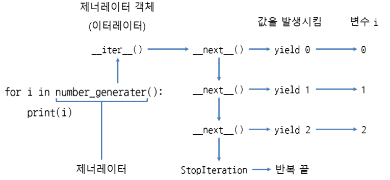

Iterator, Generator, Decorator¶
Iterator¶
- 반복 가능한 객체(Iterable) : 요소가 여러 개 들어있고, 한 번에 하나씩 꺼낼 수 있는 객체
- 문자열, 리스트, 딕셔너리, 세트 등
- 이터레이터 :
__next__메서드를 사용해서 차례대로 값을 꺼낼 수 있는 객체 (map도 이터레이터)
즉, 반복 가능한 객체에서 __iter__메서드로 이터레이터를 얻는다
반복 가능한 객체인지 확인¶
- dir(객체) : 객체가 반복 가능한 객체인지(
__iter__유무) 알아보는 방법 __next__(): 이터레이터는 __next__로 요소를 계속 꺼내다가, 없으면 StopIteration 예외 발생
Iterator 구현¶
class Counter:
def __init__(self, stop):
self.current = 0 # 0부터 지정된 숫자 직전까지 반복
self.stop = stop # 반복을 끝낼 숫자
def __iter__(self):
return self #현재 인스턴스 반환
def __next__(self):
if self.current < self.stop:
r = self.current
self.current +=1
return r
else:
raise StopIteration
for i in Counter(3):
print(i, end = ' ') # 0 1 2
Iterator 언패킹¶
인덱스로 접근할 수 있는 Iterator¶
__getitem____getitem__만 구현해도 이터레이터가 되며__iter__,__next__는 생략 가능
iter¶
- 반복을 끝낼 값을 지정하면, 특정 값이 나올 때 반복을 끝냄
- 반복 가능한 객체 대신 호출 가능한 객체 (callable)를 넣어줌
- iter(호출가능한객체, 반복을끝낼값)
next¶
기본값을 지정하여 반복이 끝나더라도 StopIteration을 발생하지 않고, 기본값을 출력
- next(반복가능한객체, 기본값)
Generator¶
이터레이터를 생성해주는 함수
- yield 값 : 함수 안에서 사용하면, 함수는 제너레이터가 되며 yield에는 값(변수)을 지정
제너레이터가 이터레이터 객체인지 확인¶
- 제너레이터는 yield에 지정한 값이 next 메서드의 반환값으로 나옴
- 제너레이터는 함수의 끝에 도달하면 StopIteration이 자동으로 발생
- 제너레이터 객체에서
__next__메서드를 호출할 때마다, 함수 안의 yield까지 코드를 실행하며 yield에서 값을 발생시킴
for문과 제너레이터¶
- 반복할 때마다
__next__호출. yield에서 발생시킨 값을 반환하다 StopIteraion이 발생하면 끝 - 제너레이터 함수 호출 → 제너레이터 객체 →
__iter__는 self 반환 → 제너레이터 객체 - yield : 값을 함수 바깥으로 전달하면서, 코드 실행을 함수 바깥에 양보 
yield의 동작 과정¶
def number_generator():
yield 0 # 0을 함수 바깥으로 전달하면서, 코드 실행을 함수 바깥에 양보
yield 1 # 1을 함수 바깥으로 전달하면서, 코드 실행을 함수 바깥에 양보
yield 2 # 2을 함수 바깥으로 전달하면서, 코드 실행을 함수 바깥에 양보
g = number_generator()
a = next(g) # yield를 사용하여 함수 바깥으로 전달한 값은, next의 반환값으로 나옴
print(g) # 0
b = next(g)
print(g) # 1
-
yield의 실행 양보

g = number_generator()와 같이 제너레이터 객체 생성next(g)를 호출하면, 제너레이터 안의yield 0이 실행되어 숫자 0을 전달한 뒤, 바깥의 코드가 실행되도록 양보- 함수 바깥에서는 print(a)로 next(g)에서 반환된 값을 출력
- 값을 출력했으면, next(g)로 다시 제너레이터 안의 코드 실행
- 즉, return은 반환 즉시 함수가 끝나지만, yield 는 잠시 함수 바깥의 코드가 실행되도록 양보하여 값을 가져가게 한 뒤 다시 제너레이터 안의 코드를 계속 실행하는 방식
제너레이터와 return¶
제너레이터 안에서 return에 반환값을 지정하면, StopIteration 예외의 에러 메시지로 들어감
def one_generator():
yield 1
return 'return에 지정한 값'
try:
g = one_generator()
next(g)
next(g)
except StopIteration as e:
print(e) # return에 지정한 값
yield 에서 함수 호출하기¶
def upper_generator(x):
for i in x:
yield i.upper() # 함수의 반환값을 바깥에 전달
fruits = ['apple', 'pear', 'grape', 'pineapple', 'orange']
for i in upper_generator(fruits):
print(i) # APPLE \n PEAR ...
yield from으로 값을 여러 번 바깥으로 전달하기¶
- 반복 가능한 객체, 이터레이터, 제너레이터 객체 지정
- yield from 반복가능한 객체
- 이터레이터 객체
- 제너레이터 객체
yield from에 제너레이터 객체 지정¶
def number_generator(stop):
n = 0
while n < stop:
yield n
n += 1
def three_generator():
yield from number_generator(3) ## 숫자를 세 번 바깥으로 전달
for i in three_generator():
print(i) # 0 \n 1 \n 2
Generator Comprehension¶
- 리스트 표현식을 ( ) 괄호로 묶어 구현
- 리스트 표현식은 처음부터 리스트의 요소를 생성하는 것과 달리, 제너레이터 표현식은 필요할 때 요소를 만들어내므로 메모리를 절약할 수 있음.
Decorator¶
함수를 수정하지 않은 상태에서 추가 기능을 구현할 때 사용
# 함수의 시작과 끝을 출력하는 데코레이터
# 함수 안에서 함수를 만들고 반환하는 클로저 형식
def trace(func): # 함수를 매개변수로 받음
def wrapper(): # 호출한 함수를 감싸는 하루
print(func.__name__, "함수 시작") # __name__으로 함수 이름 출력
func() # 매개변수로 받은 함수 호출
print(func.__name__, "함수 끝")
return wrapper # wrapper 함수 반환
@trace
def hello():
print("hello")
def world():
print('world')
hello() # hello 함수 시작 \n # hello
world() # hello 함수 끝 \n # hello
함수 매개 변수와 반환값을 처리하는 데코레이터¶
def trace(func):
def wrapper(a,b): # 호출할 함수 add(a, b)의 매개변수와 똑같이 지정
r = func(a,b) # func에 매개변수 a, b를 넣어서 호출하고 반환값을 변수에 저장
print('{0}(a={1}, b={2}) -> {3}'.format(func.__name__, a, b, r)) # 매개변수와 반환값 출력
return r
return wrapper
@trace
def add(a,b):
return a+b
print(add(10,20)) # 30
가변 인수 함수 데코레이터¶
def trace(func):
def wrapper(*args, **kwargs): # 가변 인수, 키워드 인수 둘 다 적용 가능
r = func(*args, **kwargs) # func에 args, kwargs를 언패킹하여 넣어줌
print('{0}(args={1}, kwargs={2}) -> {3}'.format(func.__name__, args, kwargs, r))
return r
return wrapper
@trace # @데코레이터
def get_max(*args): # 위치 인수를 사용하는 가변 인수 함수
return max(args)
@trace # @데코레이터
def get_min(**kwargs): # 키워드 인수를 사용하는 가변 인수 함수
return min(kwargs.values())
print(get_max(10, 20)) # 20
print(get_min(x=10, y=20, z=30)) # 10
매개 변수 데코레이터¶
### 함수의 반환값이 특정 수의 배수인지 확인하는 데코레이터
def is_multiple(x):
def real_decorator(func): # 호출할 함수를 매개변수로 받음
def wrapper(a,b): # 호출할 함수의 매개변수와 똑같이 지정
r = func(a,b) # func를 호출하고 반환값을 변수에 저장
if r % x == 0: # func의 반환값이 x의 배수인지 확인
print('{0}의 반환값은 {1}의 배수입니다.'.format(func.__name__, x))
else:
print('{0}의 반환값은 {1}의 배수가 아닙니다.'.format(func.__name__, x))
return r # func의 반환값을 반환
return wrapper # wrapper 함수 반환
return real_decorator # real_decorator 함수 반환
@is_multiple(3) # @데코레이터(인수)
def add(a,b):
return a+b
print(add(10, 20)) # add의 반환값은 3의 배수입니다. \n 30
print(add(2, 5)) # add의 반환값은 3의 배수가 아닙니다. \n 7
매개변수가 있는 데코레이터를 여러 개 지정¶
@is_multiple(3)
@is_multiple(7)
def add(a, b):
return a + b
add(10, 20)
# add의 반환값은 7의 배수가 아닙니다.
# wrapper의 반환값은 3의 배수입니다.
# ↑ 원래 이름을 출력하고 싶다면,
import functools # functools.wraps: 함수의 정보 유지
def is_multiple(x):
def real_decorator(func):
@functools.wraps(func) # @functools.wraps에 func를 넣은 뒤 wrapper 함수 위에 지정
def wrapper(a, b):
r = func(a, b)
if r % x == 0:
print('{0}의 반환값은 {1}의 배수입니다.'.format(func.__name__, x))
else:
print('{0}의 반환값은 {1}의 배수가 아닙니다.'.format(func.__name__, x))
return r
return wrapper
return real_decorator
클래스로 데코레이터 만들기¶
class Trace:
def __init__(self, func): # 호출할 함수를 인스턴스의 초깃값으로 받음
self.func = func # 호출한 함수를 속성 func에 저장
def __call__(self):
print(self.func.__name__, '함수 시작') # __name__으로 함수 이름 출력
self.func()
print(self.func.__name__, '함수 끝')
@Trace
def hello():
print('hello')
hello()
함수의 매개변수와 반환값을 처리하는 클래스 데코레이터¶
class Trace:
def __init__(self, func):
self.func = func
def __call__(self, *args, **kwargs): # 호출할 함수의 매개변수를 처리
r = self.func(*args, **kwargs) # self.func에 매개변수를 넣어서 호출하고 반환값을 변수에 저장
print('{0}(args={1}, kwargs={2}) -> {3}'.format(self.func.__name__, args, kwargs, r))
return r
@Trace
def add(a,b):
return a+b
print(add(10, 20))
print(add(a=10, b=20))
매개변수 클래스 데코레이터¶
class IsMultiple:
def __init__(self, x): # 데코레이터가 사용할 매개변수를 초깃값으로 받음
self.x = x # 매개변수를 속성 x에 저장
def __call__(self, func):
def wrapper(a,b): # 호출할 함수의 매개변수와 똑같이 지정(가변 인수로 작성해도 됨)
r = func(a,b) # func를 호출하고 반환값을 변수에 저장
if r % self.x == 0:
print('{0}의 반환값은 {1}의 배수입니다.'.format(func.__name__, self.x))
else:
print('{0}의 반환값은 {1}의 배수가 아닙니다.'.format(func.__name__, self.x))
return r # func의 반환값을 반환
return wrapper # wrapper 함수 반환
@IsMultiple(3)
def add(a,b):
return a+b
print(add(10, 20))
print(add(2, 5))